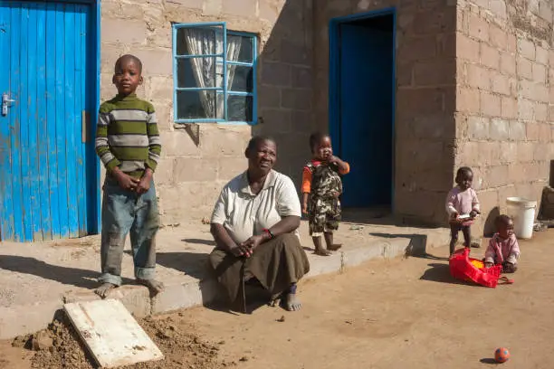

About Us
Hope Foundation was created to support families facing hardship by focusing on three key areas: education, health, and shelter. Every donation and volunteer hour goes directly toward helping communities build a better future.

Education

Health

Shelter
Our Programs
| Program | Description | Families Helped |
|---|---|---|
| Education | School fees and supplies | 200 |
| Health | Medical checkups and clinics | 150 |
| Shelter | Housing support | 100 |
Stories of Hope
The Mukamana Family
After losing their home, the Mukamana family received shelter support from Hope Foundation. Today, their children are back in school and the family has a safe place to live.
The Uwase Family
Thanks to our health program, the Uwase family received free medical checkups for their children, catching a health issue early and getting the treatment they needed.